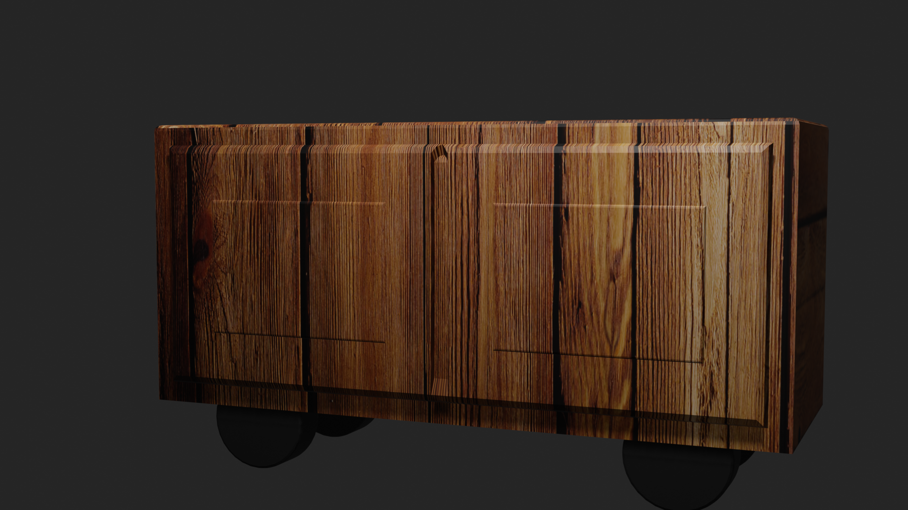

Szerintem nagyon szép és különleges lenne, ha egy gurulós bankett büfé asztalt csináltatnánk. Olyan színvilággal, ami majd beleillik a megújult dizájnba. Mobilis, és tároló helyben gazdag lehetne. Nyitható szekrénnyel. A büfé asztalban megvalósulhatna a lehetőség az eszközök tárolására. Úgy kellene megtervezni hogy tányérok, csészék, kanalak, poharak, kiemelések elférjenek benne. Masszív strapabíró kerekekkel. A lobbyba jól mutatna egy szép szekrénysor hatását keltő büfé. Tárolását a foyerben képzeltem el. A Foyer falán ahol a kávészüneteket szoktuk lebonyolítani, illetve a hátsó ablakfelöli részen. Ezt a 3D-s skiccet én szerkesztettem természetesen ennél sokkal szebbre gondolok. Beszéltem Fülöp Úrral azt mondta megvalósítható.
